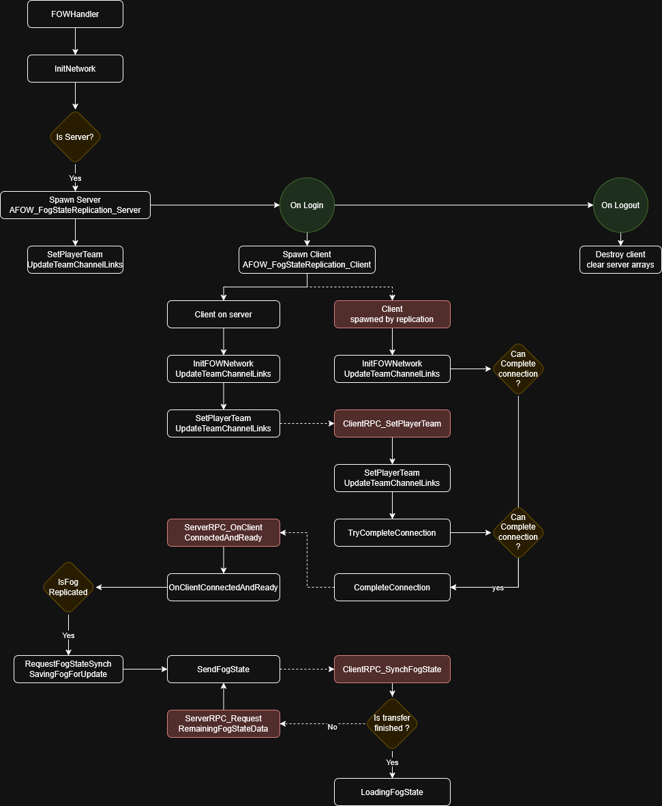

Network
Table of contents
Explanation
The Layered Fog of War is ready for online games but requires a good understanding of the replication provided by Unreal,
and how the LFOW uses it. To begin with, the Fog State isn't replicated; it can be synchronized to the client, but the
LFOW will never continually send fog data over the network.
The LFOW relies on the simulation, ensuring the state of the server and the client remains the same as long as the
position of the drawer is replicated and correctly updated. In case of latency or client disconnection, the LFOW server can,
as mentioned earlier, synchronize and send the fog state through RPC to the clients.
The plugin includes the concept of teams, which can be seen as data duplication. If the LFOW is set up with 2 channels and
3 teams, it will use 6 channels internally. Currently, it can only manage up to 8 channels, which means a maximum of 4 teams
with 2 channels each.
However, many games don't need to synchronize the Fog State and rely only on the simulation. MOBA games like League of Legends or Dota will only use a single channel to represent what is currently visible. For games using such a setup, the
team limit disappears.
See the Networking turorial for implementation.
Network Settings
The UFOW_NetworkSettings class is designed to override the FOWHandler variables for online games and set up different
behaviors depending on the Net Status. Server, Client, and Spectators require more or less data to be computed by the
LFOW. For example, a Client only needs to compute the state of its team since it should never see what the opponent sees.
However, the Server needs to store the state of each team in case of client re-synchronization.
Fog State Replication
AFOW_FogStateReplication is the base class for every Online game instance implementing the LFOW. The server will have
its own class and will spawn a new one for every client. It will manage the network used by the plugin, handle connection and
disconnection, and provide useful RPC to synchronize every game instance. For now, it will only attribute a Team ID to
every client which is replicated and provide methods to synchronize the Fog through RPC if needed.
Server
AFOW_FogStateReplication_Server handles all client connections and provides a Team ID to every AFOW_FogStateReplication_Client.
To gain full control of the IDs distributed, you can override GetClientTeamIndex, allowing you to return any value. See the
Networking tutorial for more information. If the fog is replicated, be aware that any team ID higher than the maximum team limit won't work.
You will find two multicast methods that I've written as examples. I'm not sure of their efficiency, so please don't use them:
MulticastRPC_AddDrawer, deprecatedMulticastRPC_RemoveDrawer, deprecated
Client
AFOW_FogStateReplication_Client lets you override a few methods to insert or call whatever you want between the connection steps.
The ServerRPC_RequestFogStateSynch RPC lets you request the server to synchronize the fog state if replication has been enabled
in the network settings. You will find a few parameters to manage automatic synchronization or the cooldown time between requests:
MinimumTimePerFrameBeforeSynch: The refresh rate threshold in ms before the automatic request of the FOW sync to the server. Set a large timer if you don't want automatic sync.SynchRequestCooldown: Cooldown to prevent the client from DDOSing the server.
Networking Diagram
Here is a simple representation of the plugin network layer. All red nodes represent networking events triggered by RPC or replication.
On the left of the On Login event are represented the server execution of a client, on the right the client one.

What is Replicated
Since the fog state is not continuously replicated but merely synchronized and then simulated, you might wonder what is actually replicated. Only two concepts use replication to allow a fast implementation of the plugin:
Client Team ID: This important value is used to request the correct fog channels from theServerwhen synchronization is required. It is also necessary to attribute ateam IDto anything modifying the fog.Drawing Components Team ID: Every drawing component's team ID will be replicated and can be changed by the server without worrying about the network stack.
Conclusion
The LFOW plugin replication implementation is very lightweight and doesn't provide much assistance for the development of
online games. The main reason for this light implementation is to avoid overloading the bandwidth and to prevent forcing its
use, as many games like RTS use simulation to avoid the replication of thousands of units. This means that developers will
need to implement events themselves to control the status of the Components and Entities.
Documentation built with Unreal-Doc v1.0.9 tool by PsichiX